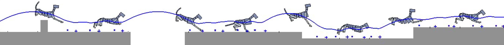

Transactions on Graphics (Proc. ACM SIGGRAPH 2015)
Xue Bin Peng Glen Berseth Michiel van de Panne
University of British Columbia

Abstract
The locomotion skills developed for physics-based characters most
often target flat terrain. However, much of their potential lies with
the creation of dynamic, momentum-based motions across more
complex terrains. In this paper, we learn controllers that allow
simulated characters to traverse terrains with gaps, steps, and walls
using highly dynamic gaits. This is achieved using reinforcement
learning, with careful attention given to the action representation,
non-parametric approximation of both the value function and the
policy; epsilon-greedy exploration; and the learning of a good state
distance metric. The methods enable a 21-link planar dog and a
7-link planar biped to navigate challenging sequences of terrain using
bounding and running gaits. We evaluate the impact of the key
features of our skill learning pipeline on the resulting performance.